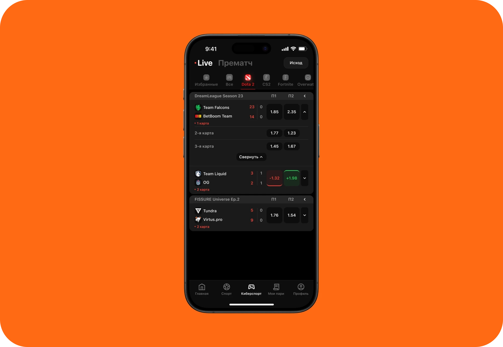
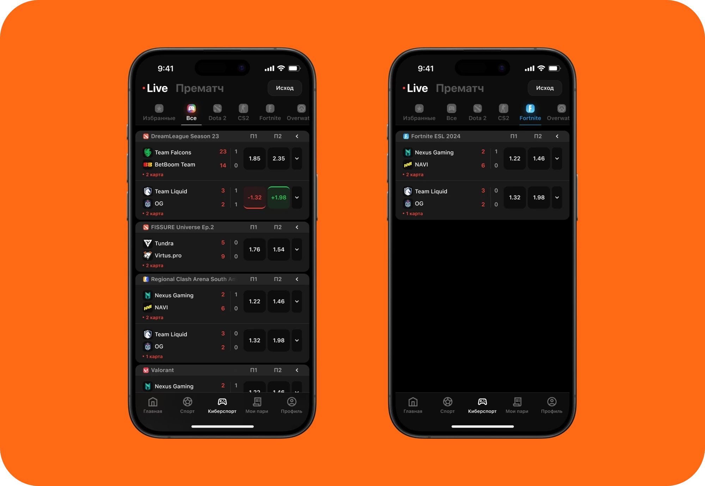
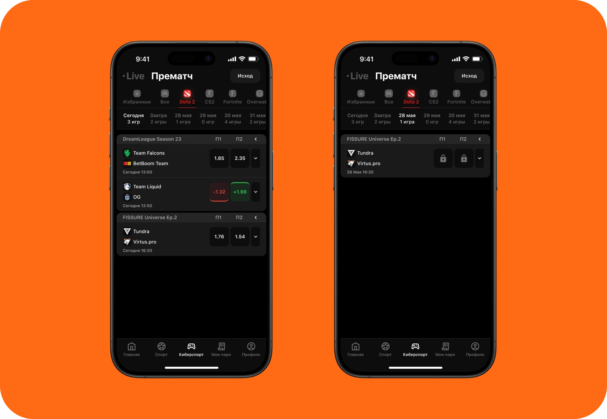
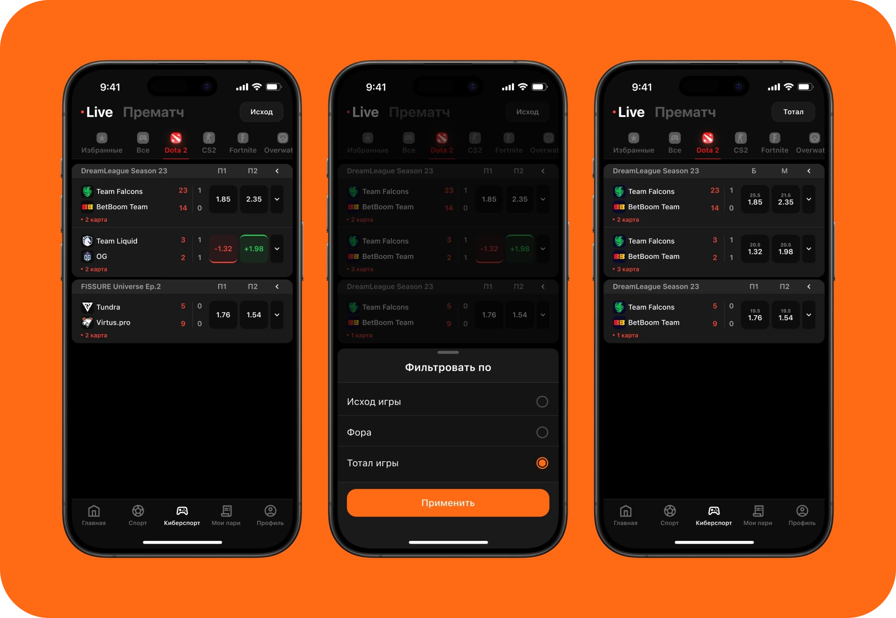
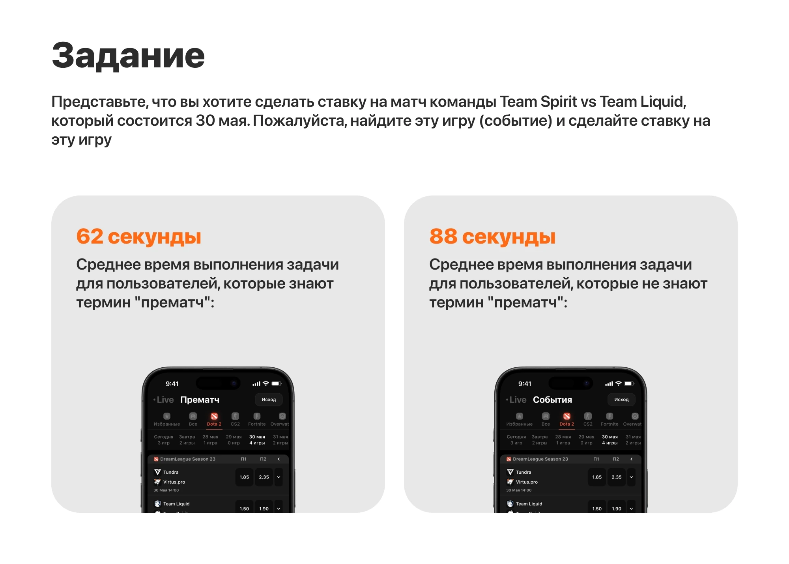

Winline — finding matches
For a Winline design exercise, I designed a pre-match page: a list of upcoming matches. I focused on people who follow esports and how they could find their game among events from every sport.
Watch the prototype ↗
The brief
The brief called for three filters: start time, sport, and markets—the types of bets available. The app was intended to work across platforms, drawing on iOS guidelines.
I wanted these filters to follow a natural sequence: choose a game, pick a day, then find the relevant odds.
A starting point
I reviewed how people find events in Winline, Fonbet, PARI, and Liga Stavok. I prepared interview questions but couldn’t recruit people from the target audience, so I relied on that analysis and my own experience.
This led to a hypothesis: familiar logos and filters close to the list could help people find matches faster.
Start with your game
I separated sports and esports into their own tabs. Within esports, I added a scrollable row of games with logos and labels. Choosing Dota 2 or CS2 narrows the list to that game.

Then pick a day
Next comes the match date. For upcoming matches, I added a row of dates with event counts, so people can see whether a day has any matches before selecting it. I left this row out of Live, where matches are already underway.

Stay in the list
A button at the top opens the market picker. Its label updates after a selection—for example, from “Winner” to “Total”—so the current setting stays visible.
I placed additional odds behind a chevron on each match. They expand within the list, without opening a separate event screen.

Testing clarity
I tested the screens with a task to find a specific match. Seventy people took part, though I couldn’t recruit esports bettors. People familiar with “pre-match” saw that label; everyone else saw “Events.”
The groups took an average of 62 and 88 seconds, respectively. They saw different versions, so these figures describe the test rather than prove that the new interface is faster than the existing one.

The outcome
The concept brings the three required filters into the flow of finding a match. To learn whether it reduces search time or affects betting activity, I would next compare it with the existing interface using the target audience.